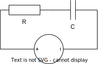

BTS - Équations Différentielles et Probabilités - DS1
Rappels
Formules d'électricité
Formules d'électricité : \(u_L(t) = Li'(t) \) ; \(u_R(t) = Ri(t)\) ; \(u_C(t)=\frac{q(t)}{C}\) ; \(q'(t)=i(t)\).
Constante de temps : \(\tau=\frac{-1}{r}\) avec \(r\) solution de l'équation caractéristique pour une équation différentielle d'ordre 1.
Formules de résolution des équations différentielles homogènes
Solutions générales d'une équation homogène du 2nd ordre :
2nd ordre : \((E^c)~:~~ar^2+br+c=0\) ; 3 cas selon \(\Delta=b^2-4ac\) :
\(\Delta>0\) : \((E^c)\) a deux solutions \(r_1=\dfrac{-b-\sqrt{\Delta}}{2a}\) et \(r_2=\dfrac{-b+\sqrt{\Delta}}{2a}\) ;
solution générale de \((E_2^*)\) : \(K\rm{e}^{r_1t}+L\rm{e}^{r_2t}\).
\(\Delta=0\) : \((E^c)\) a une solution \(r_0=\dfrac{-b}{2a}\) ;
solution générale de \((E_2^*)\) : \(K\rm{e}^{r_0t}+Lt\rm{e}^{r_0t}\).
\(\Delta<0\) : \((E^c)\) a deux solutions \(r_1=\dfrac{-b-i\sqrt{|\Delta|}}{2a}\) et \(r_2=\dfrac{-b+i\sqrt{|\Delta|}}{2a}\), complexes conjuguées de la forme \(\alpha\pm i\omega\) (on choisit \(\omega>0\)) ;
solution générale de \((E_2^*)\) : \(K\rm{e}^{\alpha t}\cos(\omega t)+L\rm{e}^{\alpha t}\sin(\omega t)\).
Ex 1 : 1er ordre : circuit RC (7 points)
On a \(R=5\Omega\) ; \(C=20\)µF et \(u_G(t)=12\)V DC ; le condensateur est déchargé à t=0.
Circuit RC série

En utilisant vos connaissances sur les équations différentielles, calculer \(q(t)\).
En déduire \(i(t)\) dans ce circuit.
En déduire la durée du régime transitoire (\(5\tau\)) et l'intensité dans le circuit une fois le régime permanent atteint.
Déterminer le temps au bout duquel le condensateur est à moitié chargé.
Ex 2 : 2nd ordre : circuit RLC série (5 points)
En utilisant vos connaissances sur les équations différentielles, calculer les solutions générales \(q(t)\) dans ce circuit. Circuit RLC Données : \(L=1\)H ; \(R=4\Omega\) ; \(C=0{,}2\)F et \(u_G(t)=12\)V DC
Ex 3 : Probabilités : événements (4 points)
Compléter le tableau suivant, chaque ligne représentant une situation indépendante.
\(A\)
\(B\)
\(\overline{A}\)
\(\overline{B}\)
\(A \cap B\)
\(A \cup B \)
0,2
0,4
0,1
0,6
0,8
0
0,7
0,7
0,5
0,85
0,1
0,4
Ex 4 : Probabilités : variable aléatoire (4 points)
On lance simultanément deux dés à six faces, bien équilibrés.
On note l'écart absolu (= différence entre le plus grand nombre et le plus petit) entre les deux nombres donnés par les deux faces des dés lancés. Par exemple si le dé 1 donne 6 et le dé 2 donne 4, l'écart sera de 2.
Compléter le tableau suivant par les écarts absolus :